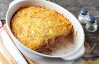

Рецепты

Ингредиенты:
Картофель - 700 г, фарш свино-говяжий - 400 г, сыр твердый - 80 г, лук зеленый - 3-4 шт. (по вкусу), яйца - 1-2 шт., сметана (по желанию) - 1-2 ст. ложки, соль - по вкусу, перец черный молотый - по вкусу, масло растительное или сливочное - для смазывания формы.
Рецепт:
1. Для приготовления запеканки из картофеля и мясного фарша подготовьте продукты по списку. Картофель очистите, вымойте вместе с луком, обсушите.

2. Натрите картофель на крупной терке, образовавшуюся жидкость нужно отжать.
3. Половину картофеля выложите в смазанную маслом форму для запекания.
4. На картофель выложите мясной фарш, посолите и поперчите его по вкусу.
5. Нарежьте зеленый лук.
6. Посыпьте луком фарш.
7. Натрите сыр на крупной терке.
8. Смешайте сыр со второй половиной натертого картофеля, добавьте яйцо (или два). Перемешайте, чуть поперчите и посолите.
9. При желании, можно добавить сметану, от этого вкус готовой картофельной запеканки с мясом только выиграет.
10. Выложите картофель с сыром на слой фарша, разровняйте ложкой.
11. Готовьте запеканку из картофеля и мясного фарша в предварительно разогретой до 180 градусов духовке примерно 1 час. Готовую картофельную запеканку с фаршем подавайте сразу же после приготовления. Для придания остроты можно подать с горчицей.
Готово! Приятного аппетита!

14 ноября, 2022 года.